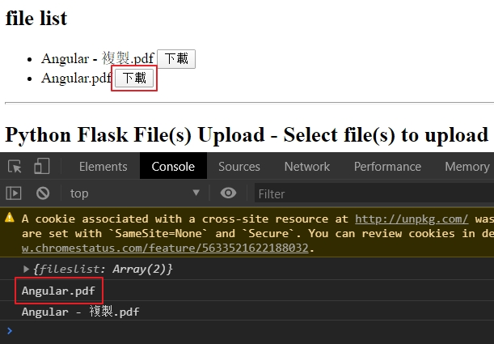

使用Angular 因為專案有使用到，可以使用angular來作上傳的動作，所以來學習一下
先來建立基本架構
加入AngularMateial 1 ng add @angular/material
目前選擇indigo-pink
加入SharedAngularMaterial <https://ithelp.ithome.com.tw/articles/10209937
1 ng g m share\SharedAngularMaterial
在MatIcon中使用Icon Font 1 npm install --save @fortawesome/fontawesome-free
接下來在src\styles.scss中
1 2 3 4 5 6 7 8 9 10 11 12 13 14 15 16 17 18 19 20 21 22 23 24 25 26 27 28 29 30 31 32 33 34 35 36 37 38 39 40 41 42 43 44 45 46 47 48 49 50 51 52 53 54 55 56 57 58 59 60 61 62 63 64 65 66 67 68 69 70 71 72 73 74 75 @import "~@fortawesome/fontawesome-free/css/all.css" ;mat-card{ margin :4px ; } .full-width { width : 100% ; } html , body , app-root,mat-sidenav-container, .site { margin : 0 ; width : 100% ; height : 100% ; } .site { display : flex; flex-direction : column; } main { flex : 1 ; display : flex; flex-direction : column; justify-content : center; align-items : center; margin-top :64px ; } .fill-remaining-space { flex : 1 1 auto; } .mat-raised-button { font-size : 18px ; } .mat-line { font-size : 18px !important ; } .mat-list-base .mat-list-option { font-size : 18px ; } .mat-header-cell { font-size : 14px ; } .mat-cell { font-size : 18px ; } .color1 { background-color : #f80909 ; } .color2 { background-color : #f4f809 ; } .color3 { background-color : #31f809 ; } .color4 { background-color : #0949f8 ; } .color5 { background-color : #c809f8 ; }
建立測試元件 一個上傳檔案，一個是檔案列表
1 2 ng g component pages/Upload ng g component pages/FwFileList
在src\app\pages\fw-file-list\fw-file-list.component.html
1 2 3 <p style ="padding: 13px;" > Angular 8 tutorial & example — How to upload image file with FormData & HttpClient </p >
設定路由 在src\app\app-routing.module.ts
1 2 3 4 5 6 7 8 const routes : Routes = [ { path : '' , redirectTo : 'fwupload' , pathMatch : 'full' }, { path : 'fwupload' , component : UploadComponent }, { path : 'fwfilelist' , component : FwFileListComponent } ]; export class AppRoutingModule { }
設定切換 在src\app\app.component.html
1 2 3 4 5 6 7 8 <mat-toolbar color ="primary" > <h1 > ngImageUpload </h1 > <button mat-button routerLink ="/" > Upload</button > <button mat-button routerLink ="/fwfilelist" > 檔案列表</button > </mat-toolbar > <router-outlet > </router-outlet >
建立上傳服務 1 ng g service fw/_services/upload
在src\app\_services\fw\upload.service.ts
1 2 3 4 5 6 7 8 9 10 11 12 13 14 15 16 17 import { Injectable } from '@angular/core' ;import { HttpClient } from '@angular/common/http' ;@Injectable ({ providedIn : 'root' }) export class UploadService { api = "https://file.io/" ; constructor (private httpClient: HttpClient upload (formData ) { return this .httpClient .post <any >(this .api , formData, { reportProgress : true , observe : 'events' }); } }
在src\app\pages\upload\upload.component.html
1 2 3 4 5 6 7 8 9 10 11 12 13 14 15 16 17 18 19 20 21 22 23 24 25 26 27 28 29 <div style ="text-align:center; margin-top: 100px; " > <mat-card style ="margin-top:10px; width: 50%;" > <mat-card-content > <ul > <li *ngFor ="let file of files" > <mat-progress-bar [value ]="file.progress" > </mat-progress-bar > <span id ="file-label" > </span > </li > </ul > </mat-card-content > <mat-card-actions > <button mat-flat-button color ="primary" > <mat-icon > file_upload</mat-icon > Upload <input type ="file" #fileUpload id ="fileUpload" name ="fileUpload" (change )="onFileSelected($event)" style ="opacity: 0; position:absolute; left:0px; top:0px; width:100%; height:100%;" /> </button > </mat-card-actions > </mat-card > </div >
在src\app\pages\upload\upload.component.scss
1 2 3 4 5 6 ul ,li { margin : 0 ; padding : 0 ; list-style : none; }
在src\app\pages\upload\upload.component.ts
1 2 3 4 5 6 7 8 9 10 11 12 13 14 15 16 17 18 19 20 21 22 23 24 25 26 27 28 29 30 31 32 33 34 35 36 37 38 39 40 41 42 43 44 45 46 47 48 49 50 51 52 53 54 55 56 57 58 59 60 61 62 63 64 65 66 67 68 69 70 71 72 73 74 import { Component , OnInit , ViewChild , ElementRef } from '@angular/core' ;import { HttpEventType , HttpErrorResponse } from '@angular/common/http' ;import { of } from 'rxjs' ;import { catchError, map } from 'rxjs/operators' ;import { UploadService } from 'src/app/_services/fw/upload.service' ;@Component ({ selector : 'app-upload' , templateUrl : './upload.component.html' , styleUrls : ['./upload.component.scss' ] }) export class UploadComponent implements OnInit { @ViewChild ("fileUpload" , { static : false }) fileUpload : ElementRef ; files = []; constructor (private uploadService: UploadService ngOnInit ( } uploadFile (file ) { const formData = new FormData (); formData.append ("file" , file.data ); file.inProgress = true ; this .uploadService .upload (formData).pipe ( map (event => switch (event.type ) { case HttpEventType .UploadProgress : file.progress = Math .round (event.loaded * 100 / event.total ); break ; case HttpEventType .Response : return event; } }), catchError ((error: HttpErrorResponse ) => { file.inProgress = false ; return of (`${file.data.name} upload failed.` ) })).subscribe ((event: any ) => { if (typeof (event) === 'object' ) { console .log (event.body ); } }); } private uploadFiles ( this .fileUpload .nativeElement .value = "" ; this .files .forEach (file => this .uploadFile (file); }); } onFileSelected (event ) { if (event.target .files .length > 0 ) { for (let index = 0 ; index < event.target .files .length ; index++) { const file = event.target .files [index]; this .files .push ({ data : file, inProgress : false , progress : 0 }); } this .uploadFiles (); } } onClick ( } }
參考資料 Angular 9/8 Tutorial & Example — Upload Files with FormData, HttpClient, RxJS, and Material ProgressBar
前言 因為專案上有使用到檔案的上傳和下載，所以來記錄一下在Python上如何的使用，網路上的範例是以flask加上它回傳的template的html檔來使用。但是我們的專案比較像是web service的方式來處理。
建立基本的架構 參考的程式碼github
先來建立一開始使用的python的web服務器的架構，因為在之前有建立相關的python的結構，所以就直接複制過來使用，包括.vscoe的設定檔
在.vscode\launch.json
1 2 3 4 5 6 7 8 9 10 11 12 13 14 15 16 17 18 19 20 21 22 23 { "version" : "0.2.0" , "configurations" : [ { "name" : "Python: Flask" , "type" : "python" , "request" : "launch" , "module" : "flask" , "pythonPath" : "D:/Project/github/StudyPython/pyvirenv/pyenv37/Scripts/python.exe" , "env" : { "FLASK_APP" : "main.py" } , "args" : [ "run" , "--no-debugger" , "--no-reload" ] , "jinja" : true } ] }
在.vscode\settings.json這是訯是虛擬環境的設定
1 2 3 4 { "python.venvPath": "D:\\Project\\github\\StudyPython\\pyvirenv\\pyenv37\\Scripts", "python.pythonPath": "D:\\Project\\github\\StudyPython\\pyvirenv\\pyenv37\\Scripts\\python.exe" }
最簡單的web在main.py
1 2 3 4 5 6 7 8 9 10 11 from flask import Flask, request, redirect, jsonifyapp = Flask(__name__) @app.route('/' def hellworld (): return "hello world" if __name__ == "__main__" : app.run(debug=False )
查看檔案的列表 在main.py
1 2 3 4 5 6 7 8 9 10 11 12 13 14 15 16 17 18 19 20 21 22 23 24 25 26 27 28 29 30 31 32 33 import osimport urllib.requestfrom flask import Flask, request, redirect, jsonifyUPLOAD_FOLDER = 'd:/uploads' app = Flask(__name__) app.secret_key = "secret key" app.config['UPLOAD_FOLDER' ] = UPLOAD_FOLDER app.config['MAX_CONTENT_LENGTH' ] = 256 * 1024 * 1024 @app.route('/files' ,defaults={'folder' : None ,'sub_folder' : None }, methods=['GET' ] def files (folder,sub_folder ): basedir = app.config['UPLOAD_FOLDER' ] directory = '' if folder != None : directory = directory + '/' + folder if sub_folder != None : directory = directory + '/' + sub_folder files = os.listdir(basedir + directory) resp= jsonify({'fileslist' : files}) resp.status_code = 200 resp.headers['Access-Control-Allow-Origin' ] = request.environ['HTTP_ORIGIN' ] return resp if __name__ == "__main__" : app.run(debug=False )
有CORS的問題，可以暫時解決使用在回傳時加入resp.headers['Access-Control-Allow-Origin'] = request.environ['HTTP_ORIGIN']
Client端的設定 可以參考learn-rollup4 的檔案來當作一個骨架來加入設定
在src\index.ts
1 2 3 4 5 6 7 8 9 10 11 12 13 14 15 16 17 18 19 20 21 22 23 24 25 26 27 28 29 30 31 32 33 34 35 36 37 38 39 40 41 42 import axios from 'axios' ;class Engine { private static _instance : Engine ; private constructor ( public static getInstance (): Engine { if (this ._instance == null ) { this ._instance = new Engine (); } return this ._instance ; } private _appid : string = "" ; init (appid: string ) { this ._appid = appid; } showAppid ( console .log ('appid=' + this ._appid ); } getFilelist (callback: (ent: any ) => void ) { axios.get ('http://127.0.0.1:5000/files' ) .then ((res ) => { console .log (res.data ); if (callback != null ) callback (res.data .fileslist ) }) .catch ((err ) => { console .log (err); console .log (err.response ); }) } } export default Engine ;
在dist\index.html要加入使用的程式庫axios和jquery接下來在加入自已編譯好的index.js
1 2 3 4 5 6 7 8 9 10 11 12 13 14 15 16 17 18 19 20 21 22 23 24 25 26 27 28 29 30 31 32 33 34 35 36 37 38 39 40 41 42 43 44 45 46 <!DOCTYPE html > <html lang ="en" > <head > <meta charset ="UTF-8" > <meta name ="viewport" content ="width=device-width, initial-scale=1.0" > <meta http-equiv ="X-UA-Compatible" content ="ie=edge" > <title > Document</title > <script type ="text/javascript" src ="https://code.jquery.com/jquery-3.4.1.min.js" > </script > <script src ="https://unpkg.com/axios/dist/axios.min.js" > </script > <script src ="index.js" > </script > </head > <body > <h2 > file list</h2 > <ul > </ul > <hr /> <h2 > Python Flask File(s) Upload - Select file(s) to upload</h2 > <dl > <p > <p id ="msg" > </p > <input type ="file" id ="multiFiles" /> <button id ="upload" > Upload</button > </p > </dl > <script > let m = monitor.getInstance (); m.getFilelist ((res ) => { res.forEach (element => $("ul" ).append (`<li>${element} <button onclick="filedownload('${element} ')">下載</button></li>` ) }); }); function filedownload (params ) { console .log (params); } </script > </body > </html >
在畫面上會列出在D:\uploads下的所有檔案列表，在點擊下載按鈕，在console的畫面會顯示檔案名稱

上傳檔案 目前是上傳的檔案會放在D:\uploads下面
在client的html裏要宣告<input type="file" id="file" />在從裏面將要上傳的檔案來取出，可以有兩種取法，一是使用Jquery，一是使用原生的document.getElementById，可以取得屬性
1 2 3 4 5 6 7 8 <h2 > Python Flask File Upload - Select file to upload</h2 > <dl > <p > <p id ="msg" > </p > <input type ="file" id ="file" /> <button id ="upload" > Upload</button > </p > </dl >
1 2 3 4 let file_dataa = document .getElementById ('file' ).files [0 ];console .log (file_dataa);let file_data = $('#file' ).prop ('files' )[0 ]console .log (file_data);
上傳的dist\index.html
1 2 3 4 5 6 7 8 9 10 11 12 13 14 15 16 17 18 19 20 21 22 23 24 25 26 27 28 29 30 31 32 33 34 35 36 <script > let m = monitor.getInstance (); m.getFilelist ((res ) => { res.forEach (element => $("ul" ).append (`<li>${element} <button onclick="filedownload('${element} ')">下載</button></li>` ) }); }); function filedownload (params ) { console .log (params); } $(document ).ready (function (e ) { console .log ("ready" ); $('#upload' ).on ('click' , function ( let form_data = new FormData (); let file_data = $('#file' ).prop ('files' )[0 ] if (file_data == null ) { $('#msg' ).html ('<span style="color:red">Select at least one file</span>' ); return ; } form_data.append ('file' , file_data); m.upload (form_data); }); }); function onUploadProgress (params ) { console .log (params); } </script >
在src\index.ts的上傳的功能
1 2 3 4 5 6 7 8 9 10 11 12 13 14 15 16 17 18 19 20 21 22 23 24 25 26 27 28 29 30 31 32 33 34 35 36 37 38 39 40 41 42 43 import axios from 'axios' ;class Engine { public static getInstance (): Engine { } getFilelist (callback: (ent: any) => void ) { } upload (formdata: any, callback: (ent: any) => void ) { axios.post ('http://127.0.0.1:5000/file-upload' , formdata, { headers : { 'Content-Type' : 'multipart/form-data' }, transformRequest : [function (data ) { return data; }], onUploadProgress : function (e ) { var percentage = Math .round ((e.loaded * 100 ) / e.total ) || 0 ; if (percentage < 100 ) { console .log (percentage + '%' ); } if (callback != null ) { callback (percentage); } } }) .then (res => console .log (res.data ); }) ; } } export default Engine ;
下載檔案 在每個檔案的列表的後面加入一個下載的按鈕
在main.py
1 2 3 4 5 6 7 8 9 10 11 12 13 14 15 16 from flask import Flask, request, redirect, jsonify, send_file@app.route('/file-download/<filename>' ,methods=['GET' ,'POST' ] def downloadFile (filename ): path= app.config['UPLOAD_FOLDER' ]+'/' +filename resp = jsonify({'filename' : filename}) resp.status_code = 200 return send_file(path, as_attachment=True ) if __name__ == "__main__" : app.run(debug=False )
在下載的htmldist\index.html
1 2 3 4 5 6 7 8 9 10 11 12 13 14 15 16 17 18 19 20 21 22 23 24 25 26 27 28 29 30 31 32 33 34 35 36 37 38 39 40 41 42 43 44 <!DOCTYPE html > <html lang ="en" > <head > </head > <body > <h2 > file list</h2 > <ul > </ul > <hr /> <h2 > Python Flask File Upload - Select file to upload</h2 > <dl > <p > <p id ="msg" > </p > <input type ="file" id ="file" /> <button id ="upload" > Upload</button > </p > </dl > <script > let m = monitor.getInstance (); m.getFilelist ((res ) => { }); function filedownload (params ) { console .log (params); m.download (params); } function onDownloadProgress (params ) { console .log (params); } $(document ).ready (function (e ) { }); </script > </body > </html >
在src\index.ts
1 2 3 4 5 6 7 8 9 10 11 12 13 14 15 16 17 18 19 20 21 22 23 24 25 26 27 28 29 30 31 32 33 34 35 36 37 38 39 40 41 42 import axios from 'axios' ;class Engine { download (dwfilename: any , callback: (ent: any ) => void ) { axios.get ('http://127.0.0.1:5000/file-download/' + dwfilename, { headers : { 'Content-Type' : 'application/json' , }, responseType : 'arraybuffer' , transformRequest : [function (data ) { return data; }], onDownloadProgress : function (e ) { var percentage = Math .round ((e.loaded * 100 ) / e.total ) || 0 ; if (percentage < 100 ) { } if (callback != null ) { } } }).then (res => console .log (res); let blob = new Blob ([res.data ]); let link = document .createElement ("a" ); let evt = document .createEvent ("HTMLEvents" ); evt.initEvent ("click" , false , false ); link.href = URL .createObjectURL (blob); link.download = dwfilename; link.style .display = "none" ; document .body .appendChild (link); link.click (); window .URL .revokeObjectURL (link.href ); }); } } export default Engine ;
參考資料 使用axios一次上传多张图片，自带上传进度
Flask下载文件
Getting Started with Axios
axios前后端分离下载文件
CORS
Python Flask File Upload Example